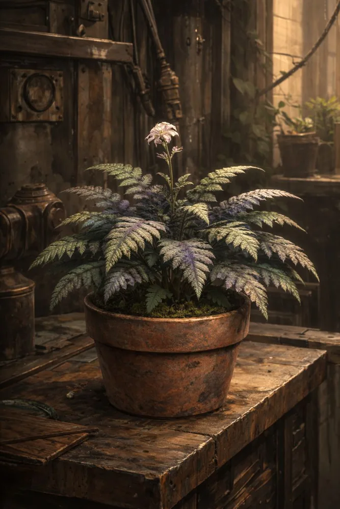

To miała być postać do kampanii Bariosa. Robię jej PORT do twojej kampanii. Stąd naprzykład pytania o magię konstruktów.
Historia ogólna
Warunki istnienia
Dymitr urodził się w Technokracji, w Hortusie widzianym z perspektywy Dolnych Poziomów. Tam, gdzie powietrze nie było czymś oczywistym, lecz warunkiem środowiskowym; gdzie pył osiadał na wszystkim, a gaz i ciecze przemysłowe traktowano jak element krajobrazu, nie zagrożenie. Niezależnie od tego, czy dorastał w rodzinie, która – na miarę realiów miasta – była względnie stabilna, czy też został sam po jednym z wielu „incydentów strukturalnych”, jego dzieciństwo nie było wyjątkowe. Było typowe. A typowość w Hortusie oznaczała ciągłą adaptację.
Jeżeli miał rodziców, byli to ludzie Dolnych Poziomów: pracujący, zmęczeni, przyzwyczajeni do ryzyka jako kosztu funkcjonowania. Jeżeli ich stracił, nie było w tym nic symbolicznego ani wyjątkowego. Zawalony dom po eksplozji fabryki obok nie był tragedią narracyjną, lecz statystyczną. Takie zdarzenia nie zmieniały biegu miasta; zmieniały jedynie listy lokatorów. Dymitr nie wyróżniał się więc tym, co go spotkało, lecz tym, co z tym zrobił.
Już jako młody chłopak wykazywał wyraźny dryg do mechanizmów. Nie do wielkich maszyn przemysłowych, które dominowały Dolne Poziomy, lecz do tego, co było w nich pomijane: mechanizmów pomocniczych, zaworów, przekładni, regulatorów. Lubił rzeczy, które działały precyzyjnie albo nie działały wcale. Naprawiał konstrukty użytkowe Technokracji z naturalną intuicją, jakby widział ich logikę zanim jeszcze rozkręcił obudowę. Nie interesowało go, do czego służą w sensie ideologicznym ani produkcyjnym. Interesowało go, dlaczego przestały działać i jak sprawić, by działały znowu.
Z czasem jego uwaga przesunęła się w stronę mechanizmów precyzyjnych. Zegarki, pozytywki, gramofony, skomplikowane automaty użytkowe i pół-artystyczne. Była w tym zarówno ambicja, jak i talent. Mechanizmy małe, gęste funkcjonalnie, nie wybaczały błędów. Każda niedokładność była natychmiast widoczna. Dymitr traktował to jak wyzwanie intelektualne, nie emocjonalne. Nieważne jak małe – da się. To nie było hasło, lecz założenie robocze.
Dzięki pracy, konsekwencji i reputacji dorobił się czegoś, co w Hortusie było realnym awansem: własnego warsztatu połączonego z mieszkaniem. Przestrzeni, która była jednocześnie miejscem życia i pracy, bez konieczności codziennego przekraczania granic stref. Zyskał również coś trudniejszego do osiągnięcia niż pieniądze – rozpoznawalność na Górnych Poziomach. Był fachowcem, do którego się zwracano, gdy precyzja miała znaczenie, a koszt przestawał być pierwszym kryterium.
Relacja z Górnymi Poziomami była jednak zawsze jednostronna. Szacunek dotyczył jego rąk, nie jego osoby. Dymitr był akceptowany jako narzędzie wysokiej jakości. Jako człowiek z Dolnych Poziomów pozostawał elementem niepożądanym w przestrzeni reprezentacyjnej. „Nie chcę tu być i nie chcę z nim rozmawiać, ale tylko on zrobi to porządnie” – to było realne credo tej relacji. I Dymitr doskonale je rozumiał. Nie obrażał się. Notował.
To właśnie w tym okresie zaczęło kształtować się jego myślenie systemowe. Zauważył, że mechanizmy, które naprawiał dla Górnych Poziomów, były projektowane z myślą o idealnych warunkach użytkowania, które w praktyce nigdy nie istniały. Działały, dopóki ktoś taki jak on nie kompensował ich niedoskonałości. System funkcjonował, ponieważ istniała niewidoczna warstwa korekt wykonywanych ręcznie, lokalnie, bez uznania i bez formalnego miejsca w strukturze.
Dymitr nie interpretował tego jeszcze jako problem moralny ani polityczny. Traktował to jak obserwację techniczną. Mechanizm, który wymaga ciągłych, nieformalnych poprawek, nie jest stabilny. Jest tylko podtrzymywany. A im bardziej wyrafinowany staje się na powierzchni, tym bardziej zależny jest od tego, co dzieje się poza oficjalnym projektem.
Na tym etapie jego życia Magnum Opus jeszcze nie istniało nawet jako pojęcie. Istniało jedynie doświadczenie człowieka, który wiedział, że świat działa nie dlatego, że jest dobrze zaprojektowany, lecz dlatego, że ktoś nieustannie poprawia go tam, gdzie projekt już dawno przestał wystarczać.
Pierwsze naruszenie
Dymitr został wezwany do lokalnej kopalni w trybie, który nie pozostawiał miejsca na negocjacje. Konstrukt wydobywczy, jeden z większych modeli eksploatowanych na Dolnych Poziomach, uległ awarii niemożliwej do usunięcia bez pracy w terenie. Maszyna była zbyt masywna, by ją przetransportować, a nawet gdyby to było wykonalne, nie zmieściłaby się w jego warsztacie. Tym razem to on musiał opuścić swoją bezpieczną, kontrolowaną przestrzeń i zejść tam, gdzie technologia stykała się bezpośrednio z materią miasta.
Droga przez Hortus była rutynowa. Transparenty, tuby głosowe, mechaniczne nośniki propagandy. Te same hasła, powtarzane od lat, z tą samą mechaniczną konsekwencją: nie dla bogów, nie dla magii. Wezwania do denuncjacji, ostrzeżenia, groźby. Dymitr słuchał ich jak szumu tła. Rozumiał pierwotne założenia Isaaca Pulvera i nawet teraz potrafił je odtworzyć bez zniekształceń. Problemem nie był fundament, lecz to, co Rada z nim zrobiła. Krucjata antymagiczna nie eliminowała magii. Wypychała ją w niekontrolowane rejony, pozbawione metodologii i nadzoru. Każda kolejna katastrofa na Dolnych Poziomach była przedstawiana jako dowód słuszności zakazu, choć w rzeczywistości była jego konsekwencją.
Nie był wolny od pokusy. Wiedział o tym. Ambicja, a może czysta ciekawość, podsuwały mu myśl, że on poradziłby sobie lepiej. Magia, jeżeli istniała i działała, musiała być systemem. A każdy system, nawet najgorzej opisany, podlegał zasadom. Poznanie zasad oznaczało możliwość kontroli. Problem polegał na tym, że Dymitr nie był magiem. Nie posiadał wewnętrznego źródła, nie miał dostępu do narzędzia, które mógłby rozłożyć na części pierwsze. Te rozważania uciął zjazd szybową windą w głąb kopalni.
Prowadził go krasnolud, brygadzista o imieniu, które Dymitr wymawia poprawnie tylko w myślach: Bromdir Złomokleszcz. Ten, jak większość nadzorców Dolnych Poziomów, narzekał bez przerwy. Przestój, normy, liczby na papierze, premia, która stopnieje, gdy Góra zobaczy spadek produktywności. Dymitr słuchał półuchem. Znał ten ton. Wiedział też, że Dół pracuje ponad granicą rozsądku dla zysku mierzonego w miedzianych monetach, które nigdy nie równoważyły ryzyka.
W jednym z bocznych korytarzy zauważył odnogę szczelnie odgrodzoną taśmami ostrzegawczymi i tablicami zakazu. Zapytał o nią mimochodem. Bromdir wyjaśnił, że próbowano tam wykuć niewielki magazyn. Jeden z rutynowych konstruktów uderzył w skałę i doszło do eksplozji. Sprawę zamknięto jako nagromadzenie gazów podziemnych, a rejon uznano za niezdatny do dalszej rozbudowy.
Dymitr przyjął to wyjaśnienie bez komentarza, ale coś się nie zgadzało. Nie był górnikiem, lecz wystarczająco często bywał w kopalniach, by znać różnicę między przypadkiem a anomalią. Dokończył naprawę konstruktu wydobywczego sprawnie i bez zbędnych pytań. Dopiero przy wyjściu poprosił o pozwolenie wejścia do zamkniętej odnogi, oficjalnie w celu odzyskania części z uszkodzonego mechanizmu.
Zgoda przyszła niechętnie, ale przyszła. Był zbyt potrzebny i zbyt szanowany w swoim fachu, by brygadziści chcieli zapisać się w jego księdze uraz. Dolne Poziomy szanowały go zarówno jako jednego z nich, jak i jako specjalistę. Dymitr potrafił się odwzajemnić mimo swojego zdystansowanego usposobienia – każda naprawa zostawiała konstrukty w stanie lepszym niż zastany. Była to relacja dwustronna.
Dymitr wszedł sam.
Zobaczył to, czego się spodziewał: ślady eksplozji, zniszczony konstrukt, nieregularne pęknięcia skał. Zobaczył też coś, czego się nie spodziewał. Spod rumowiska wystawały kryształy. Ich struktura przypominała bizmut, lecz forma była inna: geometryczne klepsydry, jakby materia sama narzucała sobie oś czasu. Powierzchnie mieniły się tęczowo, lecz pomiędzy nimi znajdowały się fragmenty wypłowiałe, jakby kolor został z nich wyssany.
Dymitr nie znał tego materiału. Nie kojarzył go z żadnym raportem, żadnym opisem, żadnym znanym procesem przemysłowym. Coś w powietrzu było inne. Coś w nim samym również. Nie był to impuls emocjonalny, lecz klarowny wniosek: to nie jest zwykła anomalia geologiczna. I co ważniejsze – nikt nie powinien się o niej dowiedzieć. Zwłaszcza Rada.
Wybrał najmniejszy fragment, nie większy od paznokcia kciuka. Umieścił go w specjalnym pojemniku z gęstego metalu, takim, jakiego używał do substancji niestabilnych i niebezpiecznych. Traktował znalezisko jak nitroglicerynę: z pełną świadomością, że niewłaściwe obchodzenie się z nim może mieć nieodwracalne konsekwencje.
Dla pozorów zabrał kilka części z uszkodzonego konstruktu. Przy wyjściu, z chłodną uprzejmością, zasugerował, że przy częstotliwości jego wizyt sensowne byłoby zaadaptowanie zamkniętej odnogi jako zaplecza warsztatowego. Mówił rzeczowo, niemal teatralnie powściągliwie, maskując zainteresowanie. Bromdir westchnął ciężko i obiecał poruszyć temat z innymi brygadzistami oraz przełożonym. Coś się zaaranżuje.
Wracając do warsztatu, Dymitr znów słyszał propagandę. Tym razem nie była tylko tłem. Wiedział, z absolutną pewnością, że to, co znalazł, postawiło go na ostrzu katowskiego topora. Jeden błąd, jedno nieostrożne pytanie, jeden niewłaściwy rozmówca – i zniknie. Potrzebował ekspertyzy. Prawdziwej. A jedyną osobą, której mógł powierzyć ten sekret, był Arthur Greyrat.
Magni D. Emiurg [PC]
Magni Dymitrenko Emiurg

A.K.A Projekt: Magnum Opus
Zewnętrzny wizerunek Magniego jest celowo zaprojektowany jako „wiarygodnie ludzki”, ale nie atrakcyjny ani neutralny. To nie jest maska mająca wzbudzać zaufanie, tylko taka, która nie prowokuje pytań. Smukła twarz, wyraźnie zarysowana struktura kostna i permanentne napięcie mimiki sprawiają wrażenie człowieka funkcjonującego w stanie ciągłej czujności. Brud, sadza i drobne uszkodzenia skóry nie są jedynie efektem środowiska – pełnią też funkcję kamuflażu narracyjnego, odciągając uwagę od ewentualnych subtelnych anomalii w fakturze czy temperaturze „ciała”.
Jasne, niemal nienaturalnie błękitne oczy są kluczowym elementem dysonansu. To jedyne miejsce, w którym przebija się coś nieludzkiego, ale w sposób na tyle subtelny, że łatwy do zracjonalizowania: zmęczenie, trauma, specyficzne światło. W kontekście mechaniki wewnętrznej można je traktować jako optyczny interfejs głowy–świata, wizualny objaw intensywnej pracy „mózgowych” trybów. Emiurgiczny aspekt Magniego nie manifestuje się więc symbolami czy ornamentami, lecz spojrzeniem – obserwującym, kalkulującym, oceniającym zależności.
Fryzura i ubiór konsekwentnie wspierają tę narrację. Krótkie, cienkie dredy są funkcjonalne, zaniedbane w sposób kontrolowany. Ciężka, robocza kurtka i warstwowy strój z drugiej ilustracji jasno lokują Magniego w środowisku przemysłowym lub postindustrialnym, gdzie jego obecność nie wymaga tłumaczeń. To bardzo istotne: jego „ludzka” powłoka nie udaje cywilizowanego obywatela, lecz kogoś, kto naturalnie należy do ruin, fabryk, zapleczy technicznych i stref granicznych świata.

Postawa ciała w pełnej sylwetce doskonale koreluje z konstruktem wewnętrznym. Luźna, ale gotowa do reakcji pozycja sugeruje stałe napięcie systemu, który nigdy nie przechodzi w pełen spoczynek. Jedna ręka w kieszeni, druga opuszczona – asymetria ta dobrze współgra z ideą wewnętrznego mechanizmu, gdzie nie wszystko pracuje synchronicznie, a część systemów jest w stanie czuwania. To nie jest „bojowa poza”, tylko ekonomia ruchu.
Najważniejsze jednak jest to, że cały ten wygląd bardzo dobrze maskuje fakt istnienia dwóch wyjątkowych struktur wewnętrznych. Nic w prezencji Magniego nie sugeruje istnienia Rdzenia w miejscu serca ani zagęszczonego mechanizmu decyzyjnego w głowie. Wręcz przeciwnie – jego obraz wizualny komunikuje zmęczenie, brud i pragmatyzm, czyli cechy, które świat interpretuje jako ludzki koszt przetrwania, a nie jako efekt konstrukcyjnych ograniczeń.
W efekcie Magni funkcjonuje wizualnie jako „człowiek, który widział za dużo”, a nie jako „coś, co nie jest człowiekiem”. To wrażenie nie wynika z jego formy ani z jakiejkolwiek ukrytej, metafizycznej natury, lecz z implikacji: ze spojrzenia, z ciszy oraz ze sposobu, w jaki obserwuje świat jak układ powiązanych ze sobą mechanizmów. Magni nie postrzega rzeczywistości w kategoriach dobra i zła ani przeznaczenia, lecz jako system zależności, który można zrozumieć, a przy odpowiednich warunkach – przestawić.
Dymitr Emiurg [NPC]
Rezonit
Pulveria humilis
Pulverka - Pulveria humilis


Wprowadzenie
Pulveria humilis stanowi jeden z najbardziej rozpowszechnionych elementów zieleni użytkowej w mieście Hortus. Jej obecność jest tak powszechna, że przez większość mieszkańców pozostaje całkowicie niezauważona. Roślina ta nie pełni funkcji symbolicznej ani prestiżowej; jej zadaniem jest jedynie wypełnienie pustej przestrzeni i wprowadzenie namiastki życia biologicznego do środowiska zdominowanego przez metal, cegłę i pył przemysłowy.
W przeciwieństwie do roślin hodowanych celowo w celach badawczych lub dekoracyjnych, Pulveria humilis nigdy nie była przedmiotem selekcji pod kątem wydajności, piękna ani użyteczności. Jej obecna forma jest efektem przystosowania do warunków panujących na Dolnych Poziomach Hortusu.
Morfologia i wygląd
Pulveria humilis charakteryzuje się zwartym, paprociopodobnym pokrojem. Liście są pierzaste, o wyraźnym unerwieniu i matowej powierzchni, która sprzyja osiadaniu pyłu. Barwa liści w stanie bazowym jest stonowana, oliwkowo-zielona, pozbawiona intensywności.
Z centralnej części rośliny wyrasta pojedynczy pęd kwiatowy zakończony niewielkim, mdłym kwiatem. Kwiat ten nie pełni istotnej funkcji dekoracyjnej i często bywa niezauważany. Jego obecność stanowi raczej biologiczny obowiązek rośliny niż element przyciągający uwagę.
Warunki środowiskowe
Roślina wykazuje wysoką odporność na zanieczyszczenia powietrza, podwyższoną wilgotność, ograniczony dostęp światła oraz nieregularne podlewanie. Dzięki temu stała się naturalnym wyborem dla mieszkańców Dolnych Poziomów. Pulveria humilis nie wymaga nawożenia ani specjalistycznej pielęgnacji, co dodatkowo utrwaliło jej pozycję jako rośliny masowej i taniej.
Oddziaływanie magiczne
Pulveria humilis nie reaguje na magię aktywną, zaklęcia ani rytuały. Nie wykazuje żadnych zmian w obecności czarów o charakterze intencjonalnym. Jej szczególna cecha ujawnia się wyłącznie w warunkach długotrwałej ekspozycji na rozproszone oddziaływania magiczne, które powstają jako efekt uboczny awarii, katastrof lub nieudanych eksperymentów. Oddziaływania te mają charakter środowiskowy i porównywane są do promieniowania.
Zmiany pigmentacyjne
Ekspozycja na rozproszone oddziaływania magiczne prowadzi do trwałej zmiany struktury pigmentów w blaszkach liściowych. Zmiany te nie zachodzą równomiernie, lecz pojawiają się w postaci plam, pasm i smug. Zjawisko to wynika z lokalnych różnic w strukturze tkanek roślinnych oraz istnienia progów reakcji biologicznej. Nowe liście wyrastające po ustaniu ekspozycji zachowują barwę pierwotną.
Efekt ekranowania
Zaobserwowano, że fragmenty rośliny znajdujące się w cieniu masywnych obiektów metalowych nie wykazują zmian barwy. Zjawisko to interpretowane jest jako efekt ekranowania oddziaływania magicznego. Metal nie oddziałuje bezpośrednio na roślinę, lecz tłumi ekspozycję środowiskową, co pozwala zachować pierwotną strukturę pigmentów.
Percepcja społeczna
W świadomości mieszkańców Hortusu Pulveria humilis funkcjonuje jako roślina całkowicie pozbawiona znaczenia. Znana jest potocznie jako „pulwerka”, „doniczak” lub „fabryczna paprotka”.
W dokumentach urzędowych pojawia się sporadycznie i zawsze klasyfikowana jest jako element bez znaczenia systemowego.